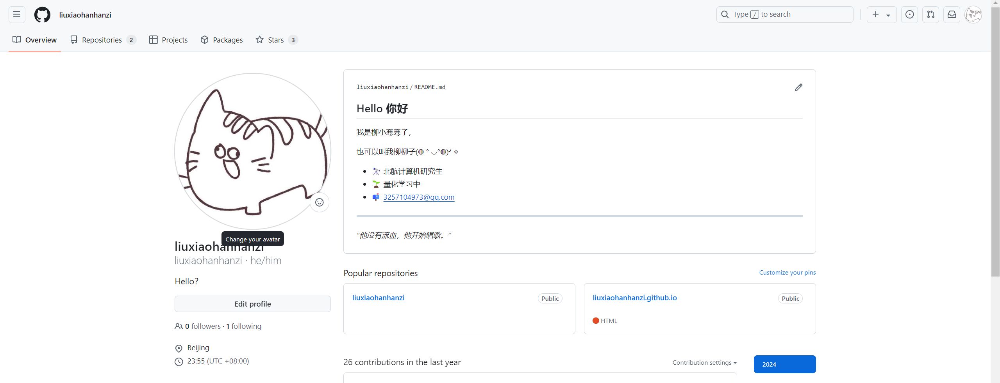

# 起因
博主的 github 一直处于注册了偶然用用的状态，没系统性的收拾过。这次该整理一下了。
# 方法
# 1. 新建仓库
创建一个名称和 github 账号名一样的仓库，默认生成 README.md
# 2. 编辑内容
-
前置配置
博主习惯用本地的 Typora 编辑，于是先配置了 git 的 ssh：git 教程
然后绑定到 github：github 教程
-
拉到本地
接着 clone 到本地
git clone https://github.com/liuxiaohanhanzi/liuxiaohanhanzi.git -
修改
-
查看本地与服务器差异
git status -
添加修改
git add .
所有修改即被加入缓存区
-
提交修改
git commit -m "完善了自我介绍"
-m后为本次提交的说明内容，这一步会保存记录到本地仓库 -
推送到远程仓库
git push origin mainmain 为分支名称，通常是
main或master，可以通过git branch查看当前分支
# 结果
